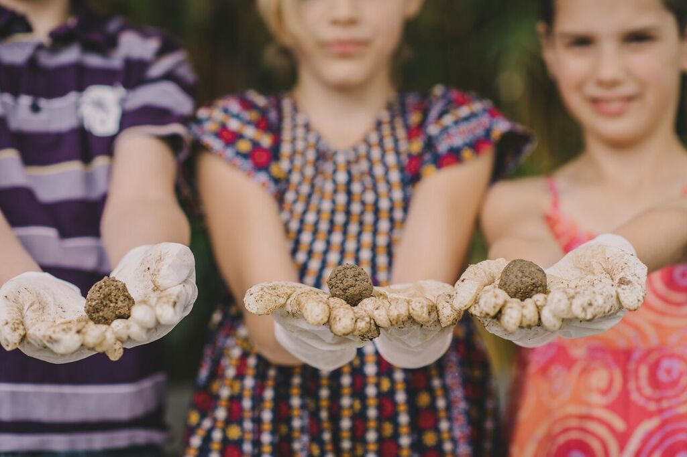
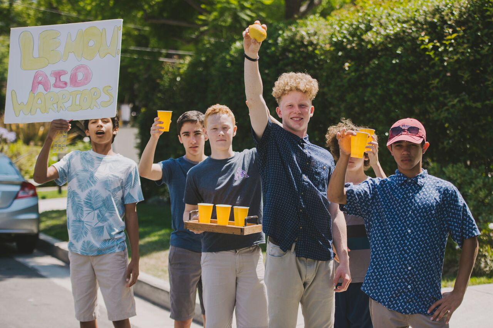
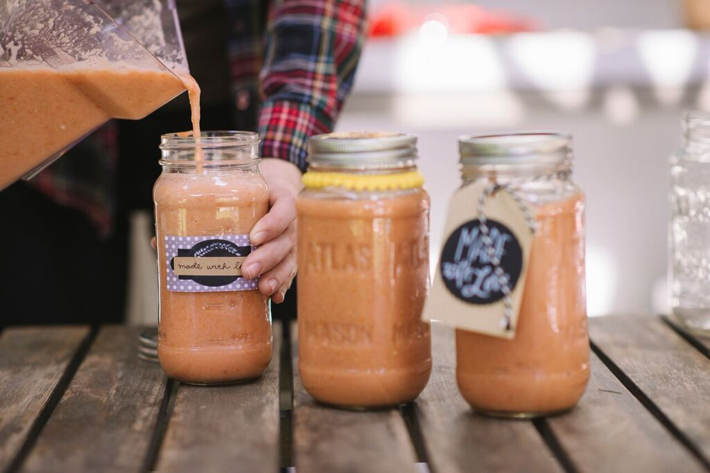
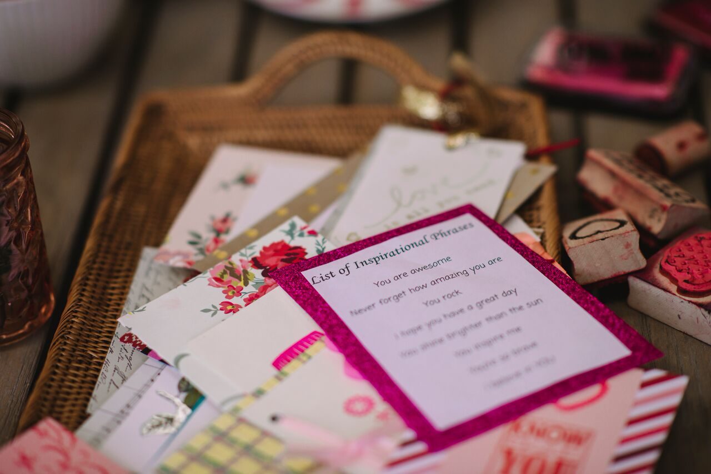
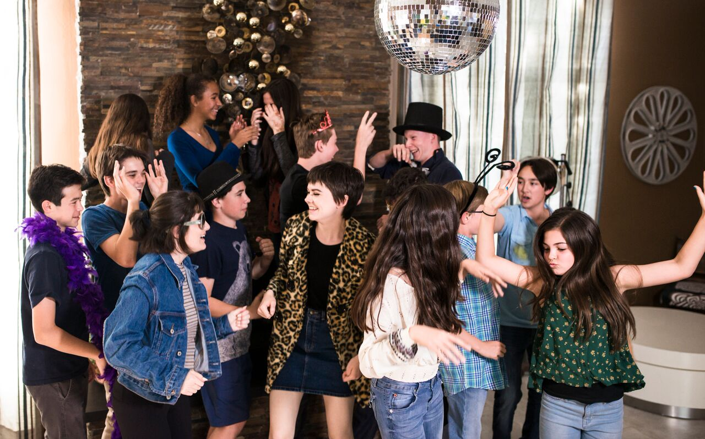

Party With A Purpose.
Why just party when you can party with a purpose? Seventeen-year-old Lulu Cerone shows teens how to bring social activism into their daily lives—and have fun while doing it—with this colorful DIY party planning guide perfect for every socially conscious kid!
Amazon Barnes & NobleWhat is a PhilanthroParty?
Everyday carry scenester art party street art health goth, hammock narwhal pabst poke tacos roof party readymade vinyl photo booth edison bulb. Tofu aesthetic coloring book, raw denim knausgaard subway tile vape mustache raclette chia
     DownloadPick a Cause
What cause speaks to your heart? What do you want to fix? It might be in your community, or it might be on the other side of the world. Big or small, it all matters. Especially if it matters to you.
Pick a Date
Look at your calendar. Turn something you’re already planning into a chance to help your cause. Birthdays, sports events, holidays, or even a simple Saturday afternoon with friends can be transformed for ultimate social impact.
Pick an Activity
Be inspired by the theme of your chosen charity! Plan activities, recipes, and decorations that relate to the cause. If you love animals and you're having a pool party, have guests bring in old towels to donate to shelters and bake doggie treats!
Praise for PhilanthroParties
Semiotics poutine bushwick blog, meggings bicycle rights meh intelligentsia. Cliche tofu narwhal XOXO, marfa snackwave authentic next level. Seitan plaid
Dreamcatcher vaporware leggings master cleanse crucifix waistcoat prism next level
Neutra edison bulb keffiyeh, cronut tilde pinterest beard chicharrones knausgaard vaporware waistcoat